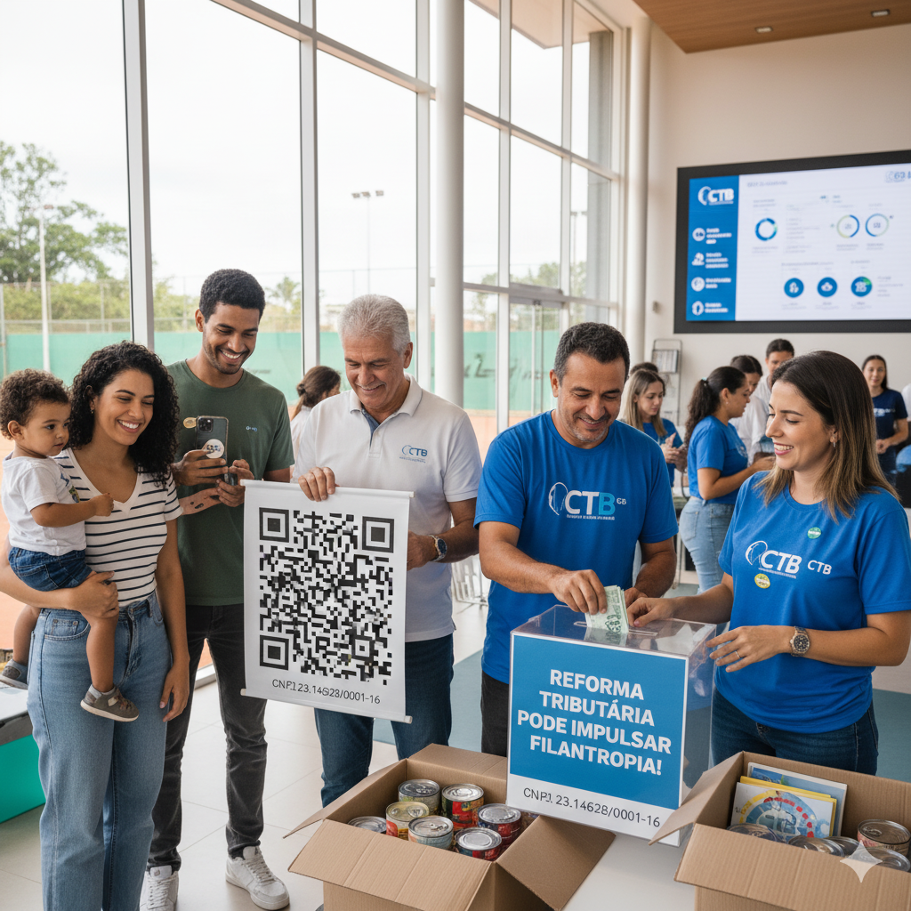

O CTB faz a diferença nas comunidades!
A Reforma Tributária 2025 zerou o ITCMD para as doações filantrópicas, modernizou as regras e digitalizou todo o fluxo de apoio social no Brasil! Apoie o CTB e seja protagonista de uma nova era para o tênis, inclusão e cultura da Bahia.

| PIB do Terceiro Setor | R$ 221 bilhões |
| Doadores ativos | 42,5 milhões |
| Empregos mantidos | 5,9 milhões |
| Total doado/ano | R$ 24,3 bi |
O que mudou e por quê doar?
- Isenção nacional do ITCMD para OSCs e clubes: doação chega integral, sem desconto.
- Alíquotas progressivas: justiça social para grandes e pequenos doadores.
- Digitalização e transparência: mais velocidade e segurança de ponta a ponta.
- Impacto real: mais bolsas, eventos, oportunidades e estrutura para o tênis baiano.
- Reconhecimento: todo apoio recebe recibo e visibilidade institucional no CTB.
Como apoiar o CTB com a nova lei?
1. Doação financeira: pelo QRCode, Pix ou transferência, qualquer valor fortalece projetos sociais, bolsas e modernização.
2. Contribua com bens e expertise: prêmios, uniformes, manutenção, eventos e trabalho voluntário são bem-vindos e incentivados.
3. Engaje sua empresa: patrocínios têm benefício fiscal e ganham ainda mais estímulo em 2025.
4. Espalhe a ideia: indique, compartilhe e inspire outros a também construir mais esporte e inclusão pela filantropia.
Quero ser doador
O que o Clube dos Tenistas da Bahia faz?
- Multiplica acesso ao esporte entre jovens, adultos, idosos e pessoas com deficiência;
- Oferece projetos sociais, aulas e eventos gratuitos;
- Investe em infraestrutura, bolsas e inclusão de qualidade reconhecida na Bahia;
- Transparência total sobre uso de recursos e resultados: acompanhe tudo em nossos canais.